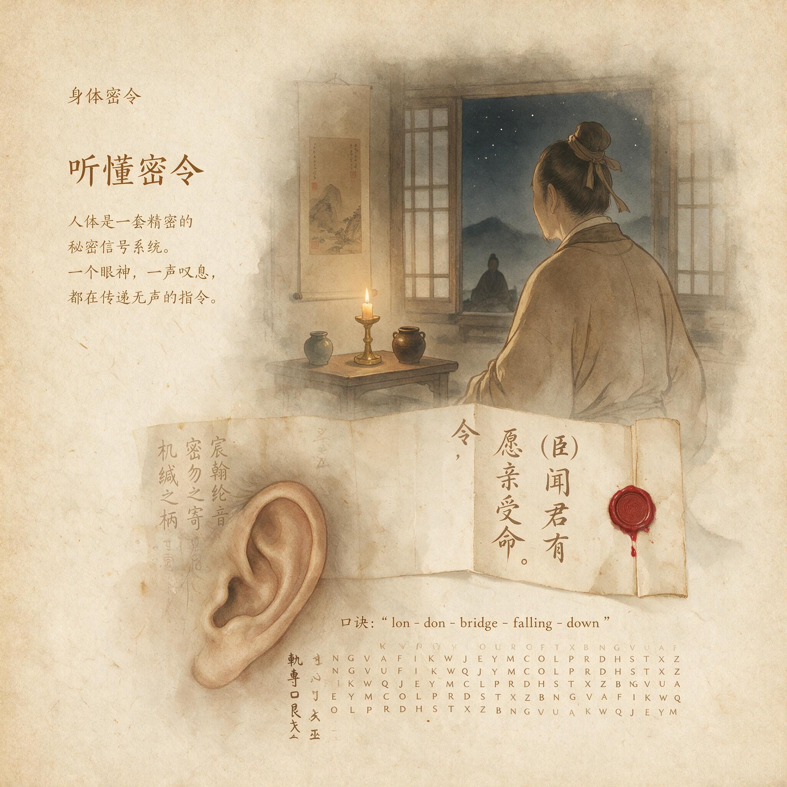

第 20 章
听懂密令
这正是炎症以高烧形式显露出的古老信号：体温计从腋下抽出，数字停在三十九度一。与动脉粥样硬化、神经退行性疾病背后的无声燃烧不同，此刻炎症亮出了高烧底牌。药箱就在手边，褪黑素色包装盒折过一角，里面是几粒退烧药。二十世纪以来，这是最寻常的家庭场景之一：一个人发烧了，第一个念头几乎总是把温度降下来。
药店货架上，退烧药与止痛片、抗酸剂、抗组胺药并排而放，它们的共同逻辑很朴素——身体不舒服，就让它别不舒服。2019冠状病毒病在2020年夏天搅动世界的时候，这一逻辑以更大的规模重演：先是额头测温，然后是囤药、服药、等温度回落。

听懂密令：历史出版插图
AI 生成插图，非史实影像。
但就在同一个时代，另一种回应也在发生。当医生判断一场三十九度的发热明确由病毒感染引起，而患者整体状况允许时，有时候他们会选择不做干预，让发热自然走完它的过程。这个决定并不罕见，却足以让许多人皱眉：发烧难道不是敌人吗？
几乎与这场全球发热同步，南加州大学的科学家在2020年8月报告了一项观察。
他们比较了2019冠状病毒病、流感和另外两种冠状病毒病的症状出现顺序，发现了一个可能的序列：2019冠状病毒病往往先发烧，然后是咳嗽和肌肉疼痛，恶心和呕吐通常出现在腹泻之前。这个顺序与流感最常见的路径相反——流感往往先咳嗽，后发烧。
这个细节本身不算石破天惊，但它像一枚微小的探针，刺中了贯穿全书的核心问题：身体发出的信号不是一堆同时响起的杂音，它们有先后、有层次、有内在逻辑。当我们急着把体温降下去的时候，我们也许正在错过那句密令真正要说的话。
这就是全书最后一章要面对的转折。前面十九章逐一拆开了疼痛、发烧、疲劳、恶心、瘙痒、心慌、腹泻、饥饿感和慢性炎症的进化来源，也展示了同一个模式在这些信号表面下的重复出现：每一道古老程序，都曾在某个环境中保护过我们的祖先。问题不在信号本身，而在于现代生活的信号环境已经彻底改写——高热量的食物堆在便利店货架上，温度恒定的房间让寒热信号失去参照，咖啡因帮我们把疲劳一推再推，止痛药让疼痛闭嘴。
于是，二十个信号在今天的身体里此起彼伏，像是同一部老式电话交换台在错误的时代响个不停。把它们看作故障，是二十世纪医学取得惊人成就的同时留下的一种思维惯性。静脉注射、无菌手术、抗生素，这些突破都建立在一个根本动作上：干预、制止、逆转。这个动作在急诊室里完全正确，在重症监护室里不可或缺。
但它一旦离开那些真正危急的场景，进入千千万万普通人的日常药箱，就发生了微妙的偏移。退烧药、止痛片、抗酸剂、抗组胺药、食欲抑制剂，这些药本身没有错。错的是它们共同促成的幻觉——身体信号是可以被静音的噪音。
现在，我们需要一个更清晰的框架来整理全书积累下来的证据。不然，倾听身体很容易沦为一句温暖而空洞的口号，而不是可以落地的判断系统。
三层指令，就是在这个时刻被摆上桌面的。第一层最容易理解：即时保护指令。疼、恶心、急性发热，都属于这一类。手碰到烧红的铁锅，疼痛让肌肉在零点几秒内缩回，不等大脑想清楚这是危险。
吃到腐败的食物，恶心和呕吐把胃里的东西清空，不让毒素继续深入。被病毒侵入，急性发热把体温调高，让许多病原体的复制速度慢下来，同时加快免疫细胞的化学步伐。这些指令的共同特征是它们要求立即行动，而且行动的方向往往是避开或排出。在更新世的草原上，这套系统挽救过的生命不计其数。它的逻辑直截了当：危险已经发生，身体需要马上做点什么。
但现代人常常忘记，即时保护指令的价值恰恰在于它的即时性。发烧到三十九度并不意味着身体正在失控，而是身体主动把恒温器的设定点上调了。体温每升高一度，某些免疫反应的效率会成倍提高。
当然，高烧有风险，尤其是婴幼儿和基础疾病患者，这是医学干预存在的重要理由。可是在那些风险不高的场景里，急着用药物把体温打回三十七度，行为上等于在身体刚刚展开防御阵型时吹了撤军号。症状消失了，防御也撤了。这场仗没有取得更快的胜利，反而可能拖得更久。第二层更微妙，也更难辨认：预测性调控指令。渴、疲劳、心慌，都属于这一类。
它们不是在伤害已经发生后才响起，而是在大脑预测到身体即将偏离安全区间时提前启动。渴觉是最好的例子。喝水这个动作发生在血液渗透压还没有真正上升到危险水平之前。大脑通过口腔、喉咙、胃肠道的感受器和过往经验，提前算出了水分的可能缺口，然后让你觉得渴。这就是为什么跑完步喝下第一口水，几秒钟内渴意就明显减轻——水还没到达血液，身体已经在更新预测了。
疲劳也一样。前面章节里讨论过，疲劳不是肌肉里的乳酸堆到了极限，而是中枢神经系统综合了能量储备、炎症信号、昼夜节律和任务难度之后生成的一个预算警告：你还能动，但继续全速运转可能透支明天的资源。
预测性调控指令的问题在于，它们在今天的环境里极其容易被误读。当你在午后感到一阵疲惫，古老系统可能只是在说：这一天的能量预算已经花了七成，需要降速。但咖啡馆就在楼下的商场里，一杯浓缩咖啡下肚，腺苷受体被外力遮住了，疲劳信号暂时消失。身体的预测没有被尊重，预算透支被推迟到更晚的时候。一天、一周，也许没什么。
三个月、三年，系统的账本就会出现赤字。那时人们去医院，拿到的诊断常常写着慢性疲劳、焦虑状态、睡眠障碍——却很少有人问，在这一切之前，有多少疲劳信号被咖啡因、意志力和再撑一下的文化静音掉了。
第三层是最容易被误诊的一层：长期适应指令。慢性炎症和持续饥饿感是这一层的代表。
它们不是某一个具体威胁触发的短促警报，而是同一套进化程序在错误环境里长期运转之后的扭曲输出。炎症本身是身体修复组织、对抗病原体的基础工具。免疫细胞释放炎症因子，召唤更多战友前来，把战场围起来打。可当内脏脂肪日复一日地积累，肠道屏障在加工食品和压力激素的侵蚀下出现微小渗漏，这场仗就变成了没有尽头的消耗战。没人发令停火，因为身体从数百万年的经验里学到的是：能量过剩储存起来，组织受损就发炎，这件事绝不会错。它不知道的是，现代人可以在同一顿饭里既摄入了祖先一整天的能量，又几乎没有付出任何体力代价。
这三种指令的区别，不在于信号本身有高低贵贱，而在于它们指向不同的时间尺度和行动方向。即时保护指令叫你立刻避开，预测性指令叫你提前调整，长期适应指令则更像是在提醒：这套程序运行的环境已经发生了根本改变。
把这三层混为一谈，是绝大多数误读的根源。用对付急性疼痛的思维去对付慢性疲劳——压制、麻醉、咬牙坚持——只会让预测性调控系统的账本进一步失衡。用退烧药的逻辑去对待慢性炎症——哪里有热就浇灭哪里——则可能让一整套修复程序在无声中持续紊乱，直到某天在血管壁上留下斑块，在胰腺里留下抵抗。理解了这三层，全书那些看似分散的章节才开始显现出统一的地形。这不是一个简单的分类，而是一个观看方式的转变：疼痛、发烧、疲劳、恶心、瘙痒、心慌、腹泻、饥饿感，它们从症状变成了密令，而密令需要被分类、被翻译、被回应。
这里必须停下来，面对一个尖锐的反驳。有人会说，这些所谓密令不过是进化留下的缺陷。阑尾发炎能有什么保护功能？婴儿的过敏为何越来越严重？
严重的恐慌发作在原始环境里难道不是更容易把人推进危险吗？这些问题问得对。进化不是设计师，它不追求完美，只在一个特定的环境里筛选够用的方案。有些信号确实可能在今天失去保护意义，甚至反过来制造伤害。
但有缺陷不等于无意义。阑尾在肠道菌群储备上可能扮演过角色；过敏原本是对抗寄生虫的免疫分支在现代环境里失去了靶子；恐慌发作的调控阈值在战争或野外环境中也许曾经果断有效。把这套系统称为缺陷，往往只是因为我们站在工业文明的人造光照下，忘了它们曾在数百万年的草原上被反复打磨。
所以，这里要提出的核心概念，不是别吃药，也不是要求任何人回到前工业时代的生活方式。那都是不诚实的浪漫。核心问题是：在按下静音键之前，能不能先停一步，问一句。
这一步，可以叫做身体素养。这个说法听起来像学校课程表上的新科目，但其实可以更朴素地理解。一个会读身体信号的人，和一个习惯性压制身体信号的人，面对同一个场景会做出不同反应。夜里十一点，体温三十八度六。
咽喉痛了三个小时，没有呼吸困难。新手可能立刻吞下两片退烧药，希望睡个好觉。
有身体素养的人会问：这个时刻的发热最可能来自什么？如果只是普通病毒感染，而体温没有继续上升到危险区间，让身体把这场热走完，可能反而缩短病程。当然，如果三个小时后体温冲到四十度，并出现意识模糊、颈项僵硬、呼吸困难，那就没有任何商量余地：去医院。
身体素养不是用自然对抗医学，而是给每一步干预找到一个精确的时机和理由。
第二杯咖啡端到手上，下午三点半。昨晚没睡够，眼皮发沉，任务清单还有三页。上一代人会习惯性灌下去，然后投入下一轮会议。有身体素养的人会先问：这阵困倦是能量预算正在告急的预测信号，还是昨晚真的睡得不够，还是最近连续加班引起的回报衰减？如果答案是后者，真正精准的干预也许不是咖啡，而是二十分钟的睡眠、一段短暂的户外行走，或者干脆把清单上最不重要的一项划掉。咖啡在这个故事里不是敌人，而是工具——工具只有在使用时机的判断正确时才是好的工具。
皮肤上起了一片红疹，瘙痒难忍。药膏就在抽屉里。过去二十年里，这种痒会被理解为皮肤问题，激素药膏一涂了之。
可如果追问一句：为什么偏偏在这个部位，偏偏在这个季节，偏偏在最近换了洗护用品之后？皮肤屏障是不是在说它受损了？神经末梢是不是在替免疫系统发出低度的炎症信号？有时答案是明确的：洗护用品刺激，停用就好。有时答案模糊，需要更细致的排查。可一旦痒等于涂药这个等价关系被打破，人就不再是自身症状的被动接受者，而变成了信号的翻译者。
这就是身体素养的内核——在具体的选择场景里，把压制从默认动作变成众多选项之一。它不要求人人成为生理学家，也不需要背下几百条免疫通路。它只需要一个习惯：在和身体信号相遇的那几秒钟里，不急着按按钮，而是先辨认一下，这是哪一层的指令，它可能指向什么，我此刻的干预是要帮身体还是让它闭嘴。
这个习惯听上去简单，做起来却比想象中困难。为什么？因为身体信号本身可以被人的期待和信念深刻地修改。这是全书最让人不安的事实之一。
疼痛研究中，安慰剂效应和反安慰剂效应早就不是新闻。一个人被告知正在接受强效止痛药的注射，即使注射的只是盐水，疼痛反应也会在脑成像中明显减弱。反过来，一个人被告知某种治疗可能引起头晕、恶心、皮疹，即使药物根本没有活性成分，这些症状出现的概率也会显著升高。身体信号从来不是对客观损伤的中性报道，它是大脑对感官输入加上记忆、情绪、社会暗示和期待之后生成的综合判断。
这给倾听身体蒙上了一层阴影。如果身体信号可以被信念扭曲，那么信号到底有多少可信度？这正是我们需要警惕那些粗略直觉的原因。
不做思考地顺着身体并不可靠。以为觉得累就该躺下可能只是在呼应反安慰剂的心理暗示；认为发烧在任何情况下都有益又可能忽视了高烧的真实风险。身体素养因此不是一种感觉，而是一种反复练习的判断。
它要求人在行动前多收集一点背景信息：这个信号什么时候开始的？伴随着什么？之前一次类似的情况是怎么结束的？我最近有没有改变作息、饮食、压力或居住环境？这种判断不会每次都准确。
长期新冠患者中，有人估计百分之十五到五十符合慢性疲劳综合征的诊断标准。这不是说病毒还在体内活跃，而是说感染可能拨动了身体预测性调控系统的某个开关，让疲劳信号从此失去了原来的校准。
这个事实对全书而言，是一次沉重的验证。病毒感染不是慢性疲劳的心理后果，更可能是大脑和免疫系统之间的通讯在剧烈交锋之后出现了长久的余波。系统评价发现，疲劳严重程度是预测慢性疲劳综合征预后的关键因素，而心理因素未显示出与预后的关联。身体没有能力向意识解释发生了什么，只能用疲劳这个古老的词汇一遍又一遍地重复。这个时候，如果社会对它的回答只剩一句让自己振作起来，或者一片接一片的兴奋剂和咖啡因，那么这百分之十五到五十的比例所测量出的，就不仅是病理的延续，也是倾听的失败。
但这不是悲观的理由。因为同一段历史也显示，那些慢性的、系统的错配并非不可延缓。
长期新冠患者中，有人估计百分之十五到五十符合慢性疲劳综合征的诊断标准。这不是说病毒还在体内活跃，而是说感染可能拨动了身体预测性调控系统的某个开关，让疲劳信号从此失去了原来的校准。这个事实对全书而言，是一次沉重的验证。
病毒感染不是慢性疲劳的心理后果，更可能是大脑和免疫系统之间的通讯在剧烈交锋之后出现了长久的余波。身体没有能力向意识解释发生了什么，只能用疲劳这个古老的词汇一遍又一遍地重复。这个时候，如果社会对它的回答只剩一句让自己振作起来，或者一片接一片的兴奋剂和咖啡因，那么这百分之十五到五十的比例所测量出的，就不仅是病理的延续，也是倾听的失败。但这不是悲观的理由。因为同一段历史也显示，那些慢性的、系统的错配并非不可延缓。
当人们学会区分急性感染期的发热和长期炎症的无声燃烧，学会在康复期尊重疲劳而非用意志覆盖疲劳，学会把睡眠、饮食和身体活动作为信号环境来调整，而不是作为敌人来对抗或作为数字来追求——这些看似微小的改变，在流行病学尺度上就变成了干预曲线的一次次变平。
和新冠初期公共卫生领域说的拉平曲线一样，身体内部的许多风险也并非一定要被彻底消灭，有时候，把它推迟、减缓、错开，就足以给系统留出修复的时间。现在，整本书的论证可以收拢到一个具体的视域里了。人类的身体在六百万年的演化中刻满了精妙的生存指令。
四百万年前的南方古猿在稀树草原上寻找块茎时，饥饿感在能量收紧的季节里帮助它活了下来。两百万年前的直立人在炎热中追逐猎物时，发汗系统和热警觉让它在中暑之前停下来。二十万年前的智人在面对腐肉和寄生虫时，恶心与呕吐把一批批病原体挡在了肠道之外。两万年前的猎人用手触碰荆棘和石刃，疼痛让他知道了肢体还能走多远。
所有这些信号，一层一层地堆叠在我们今天这副身体里，既未被完全抹去，也未能适应工业革命之后两百年突变的信号环境。两百年，在演化计时器上只是一场眨眼。冰箱、电车、电灯、精制糖、社交媒体、二十四小时值班室——这些事物到来得太快，快到基因来不及改写，也快不到任何一代人能够仅凭知识就完全接住。
这就是书从一开始就在追踪的那个根本错配：信号是旧的，环境是新的，而人类的意识夹在两者之间，既无法回到更新世草原，也还没有学会充分翻译这副古老身体的语言。所以，这本书的结论不是怀旧，也不是技术崇拜。
它更像一份关于自身操作的说明节选。身体的密令从未停止发送，只是我们大部分时间把它当作噪音。疼痛的呐喊、发热的动员、疲劳的预算、恶心的排异、瘙痒的边界、心慌的预警、腹泻的清除、饥饿的库存、炎症的耗损——它们每一个都曾经是一个有意义的句子。今天的问题是，这些句子被现代环境的噪音污染了、延迟了、扭曲了。
慢性病的根源，往往不是因为身体坏了，而是因为身体在朝着一个已经消失的世界喊话。这恰恰给了我们一个可以行动的方向。我们不可能回到更新世草原，也不需要回去。我们需要的是在每一次体温升高、每一次困意来袭、每一次瘙痒出现的时候，停一步，问一句：身体想告诉我什么。这不会让疾病消失，也不会让医药变得多余。
但它会让那些本该被听取的信号不再被白白浪费，让那些真正需要干预的时刻不再被日常的麻木拖延。它会让人从一个症状的压制者，转变为一个密令的翻译者。在本书开头，读者也许带着一个简单的问题走进来：为什么身体会痛、会累、会发烧？现在，到了最后一页，这个问题或许应该被翻转过来：如果身体一直在说话，而我们终于开始听了，那么，接下来要如何回应？这就是全部了。身体的密令不在于让现代人抛弃医学、抛弃工具、抛弃这得来不易的两百年。
它只要求我们在下一次伸手去拿药片之前，在把第三杯咖啡举起之前，在镜子前看见自己疲惫眼睛的那一瞬，停一秒钟。听一听。然后，再做决定。
这不是一个完美的答案，也不是终点。它只是一个开始——一种与这副古老身体重新交谈的方式。而在所有的喧闹与静默之间，身体仍在说话。那些声音，穿过六百万年的时光，穿过无数代猎人和采集者的生死，穿过每一次发热、每一次饥饿、每一次疼痛、每一次困倦，最终来到此时此地，化作一句我们终将学会听懂的话：活下来，并且知道如何活。